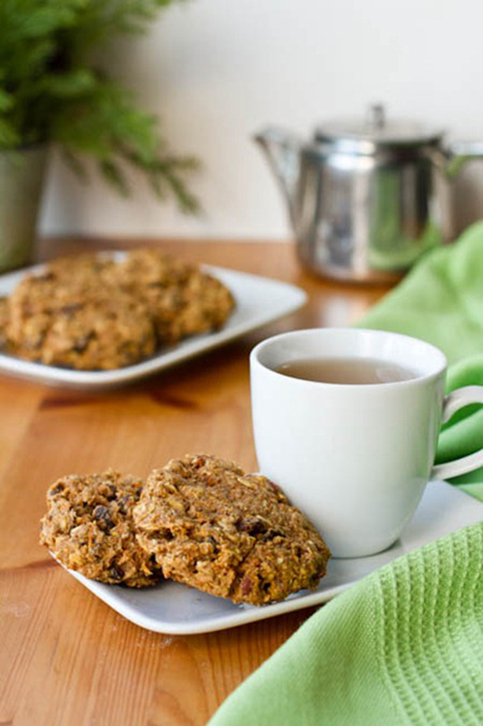
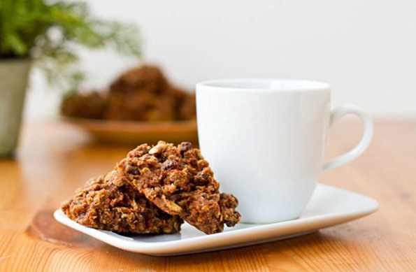

Carrot cake breakfast cookies

- Yield: 13 cookies
- Prep time: 10 minutes
- Cook time: 15 minutes
Like a healthy breakfast muffin in carrot cake cookie form. Coconut oil, maple syrup, and fresh ginger work well to create a nice carrot cake flavour.
however if you are without those ingredients you can try subbing in another light tasting oil of your choice, other liquid sweetener, and ground ginger (maybe 1/4 tsp?).
INGREDIENTS
- 1/2 cup chopped pecans, toasted
- 3/4 cup ground flax
- 1 cup whole wheat pastry flour
- 1/2 cup regular rolled oats
- 3/4 tsp baking powder
- 1/4 tsp kosher salt
- 2 tsp ground cinnamon
- 1/3 cup raisins
- 1 cup lightly packed shredded carrots (use finest grate)
- 3 tbsp coconut oil
- 1/2 cup pure maple syrup (other liquid sweeteners should work)
- 1/4 cup applesauce
- 1 tsp pure vanilla extract
- 1 tbsp fresh grated ginger

DIRECTIONS
- Preheat the oven to 325F and toast the pecans for 10-11 minutes. Meanwhile, prepare the batter.
In a large bowl, mix together the flax, flour, oats, baking powder, salt, cinnamon, and raisins. - Grate the carrots and ginger using the finest grate. In a smaller bowl, melt the coconut oil in the microwave for about 45-60 seconds.
You want the oil hot so it doesn’t clump up when adding the cold wet ingredients. Now add in the maple syrup, carrots, applesauce, grated ginger, and vanilla. Stir well. - Remove pecans from the oven and add to the dry ingredients. Increase oven temp to 350F. Now add the wet ingredients to the dry and mix well.
The dough will be very sticky, so not to worry. - With a spoon, scoop about 13 cookies onto a lined baking sheet. They don’t spread much so you can put them an inch apart.
Bake for 14-15 minutes at 350F and allow to cool on baking sheet.
NUTRITION INFORMATION
Calories 186 calories | Total Fat 9 grams
Fiber 5 grams | Protein 4 grams
* Nutrition data is approximate and is for informational purposes only.